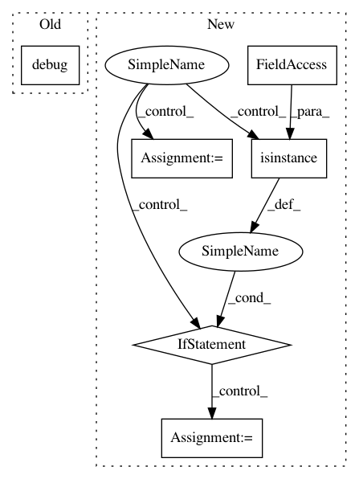

b54e99fb4c6b3d513c4eecc11b27fadafef91a4a,agents/dagger/agent.py,Agent,get_next_action,#Agent#Any#Any#,112
Before Change
desired_throttle = min(max(desired_throttle, 0.), 1.)
log.info("desired_steering %f", desired_steering)
log.debug("desired_throttle %f", desired_throttle)
if self.previous_action:
smoothed_steering = 0.2 * self.previous_action.steering + 0.5 * desired_steering
else:
smoothed_steering = desired_steering * 0.7
After Change
log.debug("net out is None")
return self.previous_action or Action()
net_out = net_out[0] // We currently only have one environment
desired_spin, desired_direction, desired_speed, desired_speed_change, desired_steering, desired_throttle = \
net_out
desired_spin = desired_spin * c.SPIN_NORMALIZATION_FACTOR
desired_speed = desired_speed * c.SPEED_NORMALIZATION_FACTOR
desired_speed_change = desired_speed_change * c.SPEED_NORMALIZATION_FACTOR
log.debug("desired_steering %f", desired_steering)
log.debug("desired_throttle %f", desired_throttle)
log.debug("desired_direction %f", desired_direction)
log.debug("desired_speed %f", desired_speed)
log.debug("desired_speed_change %f", desired_speed_change)
log.debug("desired_throttle %f", desired_throttle)
log.debug("desired_spin %f", desired_spin)
actual_speed = obz["speed"]
log.debug("actual_speed %f", actual_speed)
log.debug("desired_speed %f", desired_speed)
if isinstance(self.net, MobileNetV2):
// target_speed = 8 * 100
target_speed = desired_speed
// desired_throttle = abs(target_speed / max(actual_speed, 1e-3))
// desired_throttle = min(max(desired_throttle, 0.), 1.)
target_speed = 8 * 100
desired_throttle = abs(target_speed / max(actual_speed, 1e-3))
desired_throttle = min(max(desired_throttle, 0.), 1.)
// if self.previous_net_out:
// desired_throttle = 0.2 * self.previous_action.throttle + 0.7 * desired_throttle
// else:
// desired_throttle = desired_throttle * 0.95
else:
// AlexNet
target_speed = 9 * 100
// Network overfit on speed, plus it"s nice to be able to change it,
// so we just ignore output speed of net
desired_throttle = abs(target_speed / max(actual_speed, 1e-3))
desired_throttle = min(max(desired_throttle, 0.), 1.)
log.debug("actual_speed %r" % actual_speed)
// log.info("desired_steering %f", desired_steering)
// log.info("desired_throttle %f", desired_throttle)
In pattern: SUPERPATTERN
Frequency: 3
Non-data size: 6
Instances
Project Name: deepdrive/deepdrive
Commit Name: b54e99fb4c6b3d513c4eecc11b27fadafef91a4a
Time: 2018-05-29
Author: cquiter@gmail.com
File Name: agents/dagger/agent.py
Class Name: Agent
Method Name: get_next_action
Project Name: vatlab/SoS
Commit Name: c8788d2eedcdb2671289d7d47a41b8fdcb0294f1
Time: 2017-09-11
Author: ben.bog@gmail.com
File Name: src/sos/sos_executor.py
Class Name: Base_Executor
Method Name: resolve_dangling_targets
Project Name: deepfakes/faceswap
Commit Name: bcf38b02cc7209d1baccd1302b5224f5faf2f00a
Time: 2021-01-31
Author: 36920800+torzdf@users.noreply.github.com
File Name: plugins/train/model/_base.py
Class Name: _Inference
Method Name: _make_inference_model